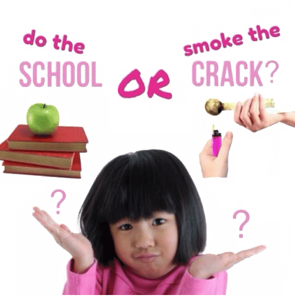

Lista Divertida de Drogas Ilícitas
Lista Drogas
Apresentação
Sobre
Sobre
Este é um projeto de criação de um "bestiário" para a disciplina de Autoração Multimídia II do curso de Sistemas e Mídias Digitais da UFC. Desenvolvido por Leonardo Sambonet, o projeto informa sobre 12 drogas diferentes.
